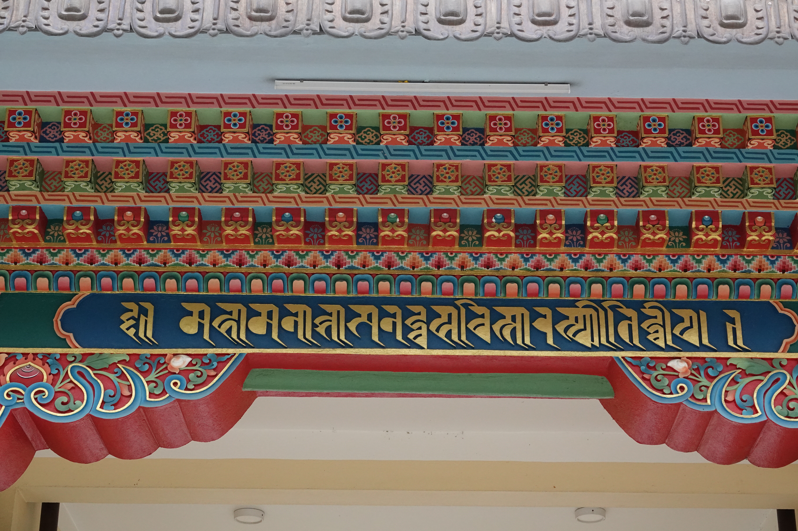
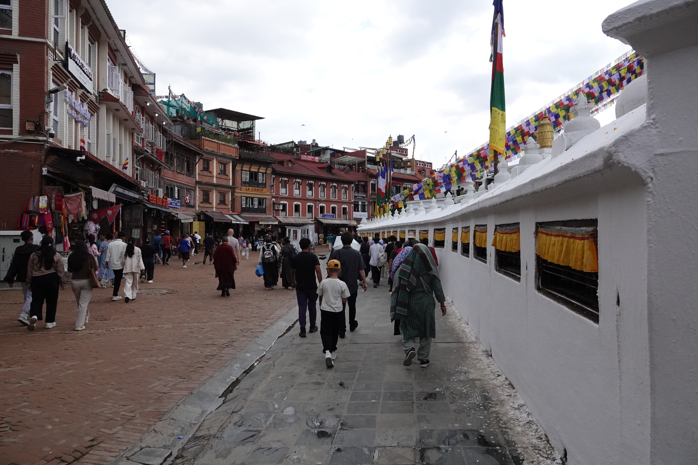
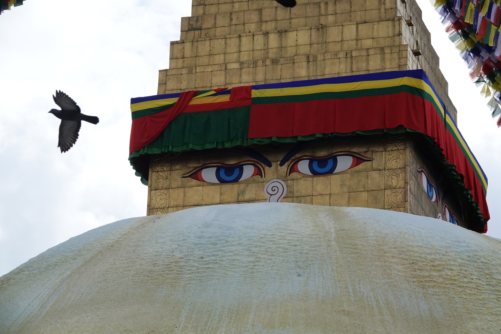
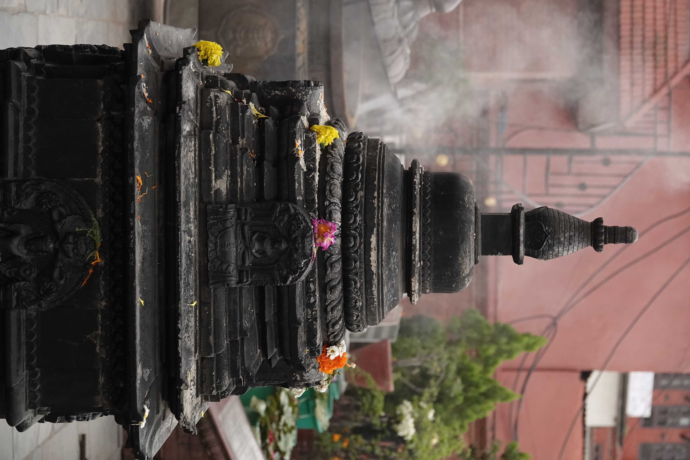
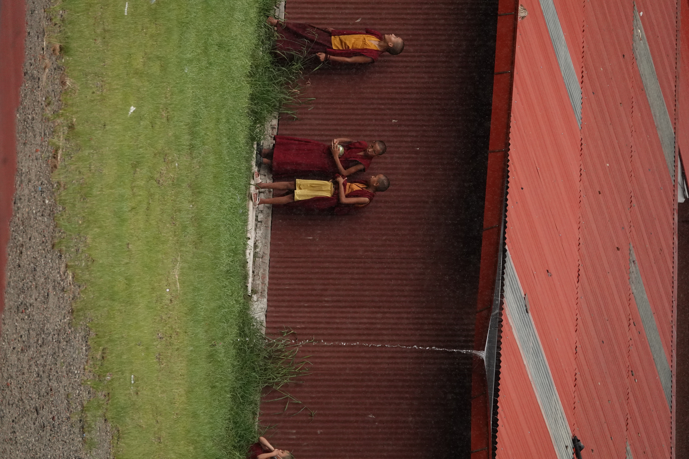

Pictures from Nepal
Here are some pictures from my trip to Nepal! I was there from June to August 2025, and
mostly stayed in the Boudha area while I was studying at RYI. I also travelled a bit around Kathmandu,
and at the end of my time there I took a trip to Pokhara and Lower Mustang, including Jomsom, Kagbeni, and Muktinath.

This is the top of the gate to Shechen monastery in Boudha, a couple blocks North of the great stupa.
I lived in a guest house near the North side of Shechen, and the monastery was one of my favorite places to
visit on my way to and from classes. It has a very beautiful courtyard with some nice places to sit.

This is the great stupa. Boudhanath Mahachaitya, Khasti Chaitya, or Jarung Kashor depending on who you ask.
I would walk by here every single day.

Kora around the stupa

A pigeon flying past the stupa. the pigeons were fun, but there were so many you could smell them in certain
places where lots of them hung out. They leave food out for them and lots of tourists like to take pictures running
into swarms of them.

Shrine in Ghyoilisang Peace Park (Guru Rinpoche Park) near the stupa.

This is one of my favorite pictures. It is a pillar on the front of Tamang Gompa on the North side of the stupa,
across from the Hariti shrine.

Vajra atop the Hariti shrine near the stupa. Hariti is a Buddhist deity who kidnapped children until the Buddha
kidnapped one of her own children and she dedicated herself to being a protector.

Ka Nying Shedrub Ling Monastery, also known as Seto Gompa (White Monastery). It is where I studied, and is
currently led by H.E. Chokyi Nyima Rinpoche, who I was fortunate to meet during my time there.

Young monks at Ka Nying take shelter from the rain during a storm.